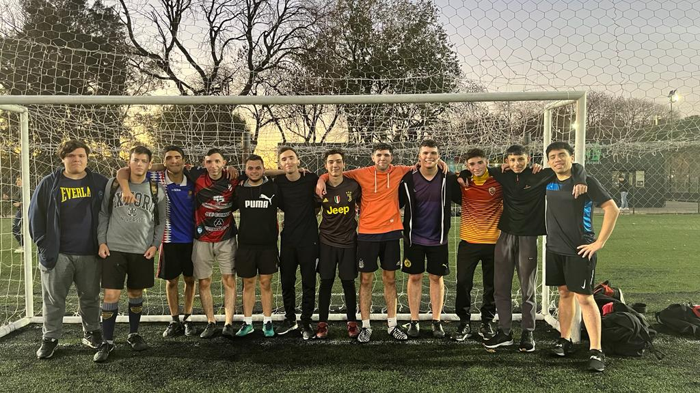
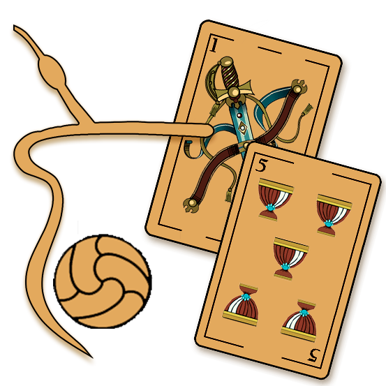

NUESTRA HISTORIA
Terminaba el mes de abril del año 2023, las hojas del otoño ya volaban gracias al viento que las perseguía, el frío ya se hacía notar, pero el sol seguía igual de fuerte que meses anteriores, mezcla de calor y frío, la grieta que muchos establecen se decidía por la tibieza y decidía que no fuera ni uno ni otro… Pero eso no nos compete, estamos acá por el fútbol, un deporte descrito por ordinarios como 11 jugadores atrás de una pelota, gente exenta de emociones y corazón, personas que nunca abrieron los ojos y dijeron “Mira el golazo que hizo”, chicos y chicas que jamás se quedaron viendo en una cancha de barrio como movían la pelota niños que lejos estaban de lo profesional, pero bien sabían que por dentro podían sentir de igual o mayor manera a la del jugador que vive de ello.
“El fútbol nos hizo amigos, y ahora nosotros hacemos al fútbol”
Teijeiro Lautaro
¿Pueden realmente simples desconocidos juntarse a formar un equipo de fútbol? Obvio que sí, pero para que haya química debe de pasar largo rato, la pelota tiene que ir y venir entre todos, como si esta fuera el lazo que los une, tiene que hacer varias vueltas por cada uno para que los ate bien, así se forma la química; que decir de quienes se conocen de antes, personas cuyas vidas han compartido durante muchos años.
Matías Kronemberger, Nicolás Donofrio, Joaquín Di Iorio y Lautaro Teijeiro, socios, jugadores y cofundadores del equipo de barrio más grande que hay, Amargo y Retruco.

La historia de la fundación del club nace de dos conceptos básicos, ser amigos y gozar de jugar al fútbol, pero ¿cómo lo llamamos? Con los ingredientes de las cosas que más nos une, un buen mate amargo y el canto del principal juego de cartas nacional, el truco, en este caso quisimos demostrar que somos más e íbamos por todo, ¿Truco? ¡Queremos Retruco carajo! ¿los colores? Tuvimos varias charlas sobre ello, ¿Rojo?, ¿Verde?, mejor vuelvan a leer y recuerden en que estación estábamos, colores cálidos que demuestran nuestra actitud en la cancha en un entorno frío que asemeja la frialdad que tenemos a la hora de jugar. 
La camiseta no fue nada fácil, hubo muchos diseños de por medio hasta llegar al final, muchas marcas interesadas, teléfonos que no paraban de sonar y el correo que estaba por estallar, no queríamos tapar nuestros colores, así que decidimos optar por solo tres sponsors, Cerrajería Sergio el principal, nos acompañó desde el principio y nunca dudo en darnos una mano para que el manto sagrado fuera una realidad, Alexis Outfit, nuestro proveedor de confianza, quien forzó las telas de nuestras camisetas y shorts, y por último Nobleza Gaucha, tenemos cebadores expertos pero se necesita de una buena yerba para que en los partidos tengamos la fuerza necesaria y las jugadas salgan como lo planeamos.
Esta es nuestra familia, un grupo de amigos que solo quieren jugar a la pelota, terminar el partido cebar unos mates y jugar un buen truco.